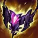

Voici les builds de Fiddlesticks
Voici le build pour jouer Fiddlesticks en jungle.
- On peut jouer d'autres items cependant ce sera moins puissant.
- On peut prendre
jusqu'à 5 items et de bottes.
- Ces items vous permette de gagné de la puissance.
Voici le build pour jouer Fiddlesticks en toplane.
- Ce build permet de jouer un Fiddlesticks plus résistant.
Pour compléter le build il faut des runes adéquat.
Les runes permettent
d'avoir des stats en plus et des compétences passives.
voici les meilleurs rune pour jouer en jungle

voici les meilleurs rune pour jouer en toplane